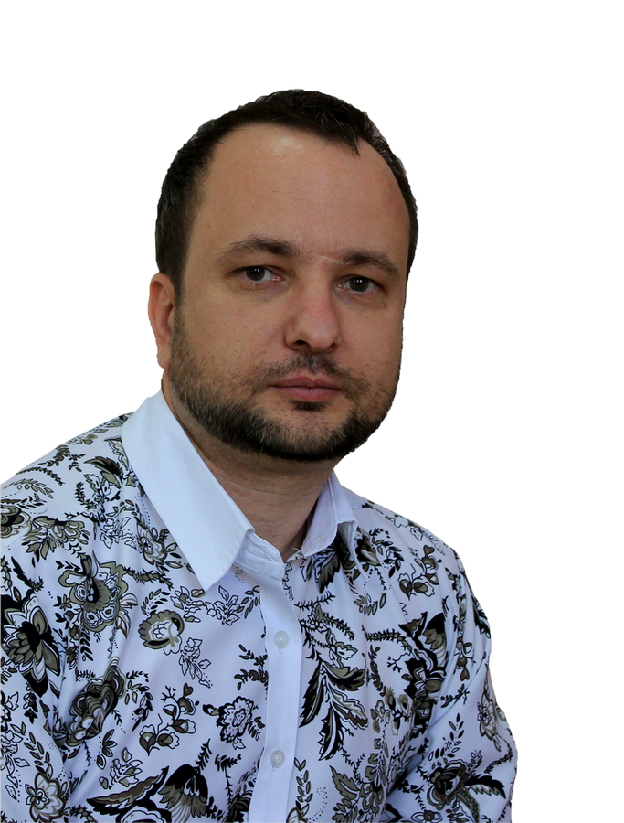

Калашников Артём Иванович
Место работы
Муниципальное автономное общеобразовательное учреждение
городского округа Долгопрудный
Средняя общеобразовательная школа № 6 имени Героя Советского Союза Н.Ф. Гастелло
Сайт школы
Средняя общеобразовательная школа № 6 имени Героя Советского Союза Н.Ф. Гастелло
Сайт школы
Образование
высшее
Аркалыкский Государственный педагогический институт им. И. Алтынсарина (2007)
учитель химии и биологии
Диплом
Аркалыкский Государственный педагогический институт им. И. Алтынсарина (2007)
учитель химии и биологии
Диплом